MapNG
MapNG🌍 MapNG's own copy of OpenStreetMap, for the whole planet
Until now MapNG asked the public OpenStreetMap servers for every area's roads and buildings. Those servers are shared by the whole world: they are slow at busy hours, they limit how much one person may ask, and some days they do not answer at all, which is when levels came out built from backup data with roads missing their bridges.
MapNG 0.3.0 has its own copy: every tagged thing in OpenStreetMap, for the entire planet, cut into map tiles and stored where the app can read just the squares it needs. It took a day and a half to build and holds 145 GB in 63 archives.
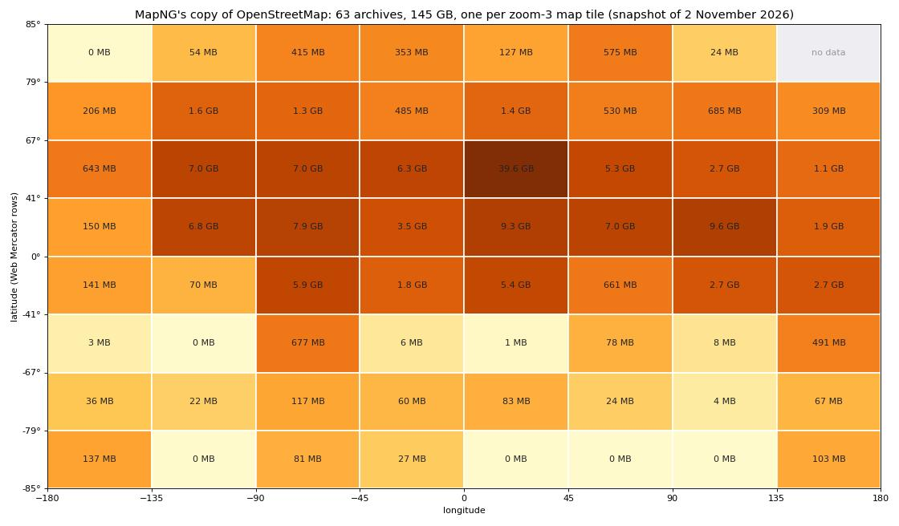
- Fast, everywhere. A town's map data arrives in one to two seconds, from Tokyo to Nairobi to Reykjavik, where the public servers took two to seven.
- Never rate limited, never "down". The copy lives on MapNG's own storage. A busy evening on the public servers no longer decides whether your level has its bridges.
- The same data. Checked at 23 places on six continents, through the app's own reader: the tiles and the live servers gave the same roads, bridges, tunnels, buildings and trees, differing only by edits made since the copy was taken (0 to 3 % of features).
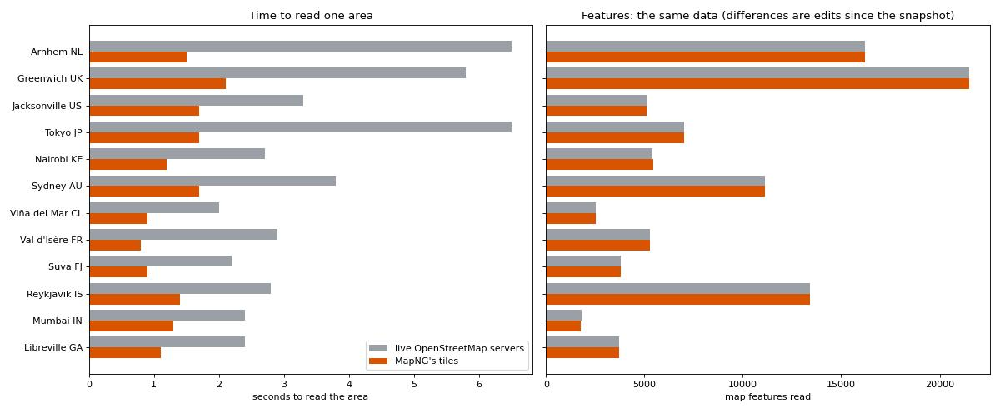
It is a snapshot, and you choose
The copy is OpenStreetMap as it was on 2 November 2026, and it will be rebuilt regularly. If you have just edited OpenStreetMap and want today's map, there is a new switch under Map data: MapNG's own copy of OpenStreetMap first. Switch it off and the live servers are asked first, with MapNG's copy as the fallback when they do not answer.
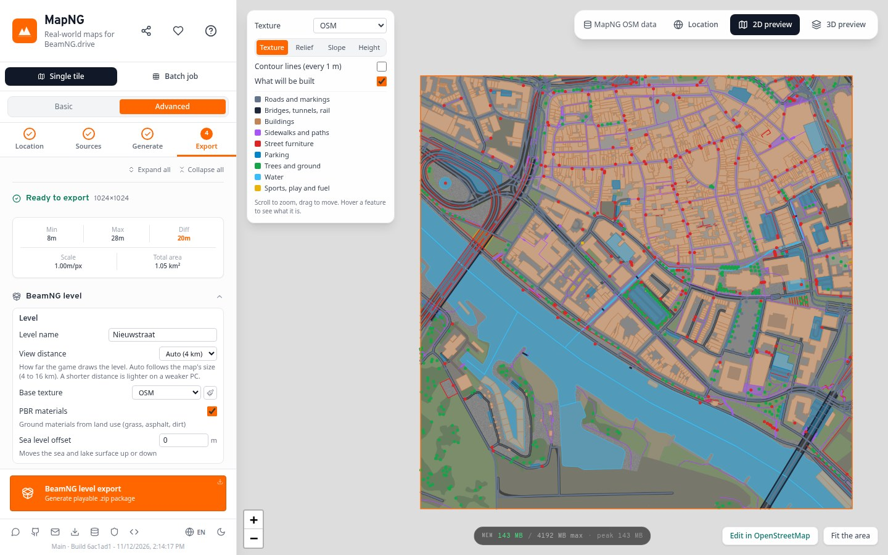
The old "Backup map data" alarm and the banner about OpenStreetMap being down are gone: with the planet on MapNG's own storage, an outage of the public servers no longer changes what you get. Every level's export report names the source and the snapshot day.
Map data © OpenStreetMap contributors, under the Open Database License. MapNG's copy holds what OpenStreetMap publishes, nothing added.
🌳 Choose the trees, the road classes and the parking
MapNG picks a lot for you: which trees suit the place, which roads to draw, how wide a town street is. Advanced mode now shows those choices and lets you change them. Basic mode is unchanged: one click still builds the whole place.
The trees picked for your area
Fine-tuning has a table of the tree kinds MapNG will plant in your area, each with its share and the game models that stand for it, and where the choice came from: local iNaturalist records, or the climate where there are none. It is counted from 2,000 trees drawn with the export's own rules at heights sampled from your terrain, so it follows a mountain's conifer line too.
- Leave a kind out. Its trees are planted as the other kinds that grow there.
- Swap a kind for another. Palms planted as live oaks, say. The row that took them in says so.
- Switch single models off within a kind.
- Reset puts everything back to what the data picked.
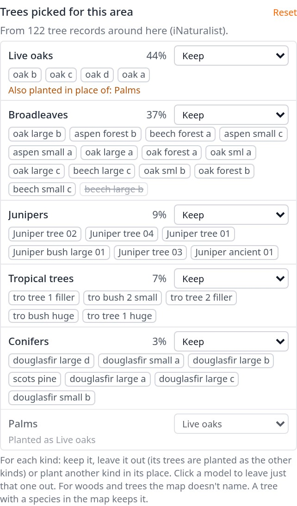
Trees mapped one by one in OpenStreetMap with their species keep that species: a swap changes what MapNG chooses, not what the map says.
Road classes
Under Roads and markings there is a switch for each class of road: motorways and trunk roads, main roads, streets, service roads, tracks. A class you switch off leaves the level with everything that belongs to it (its bridges, tunnels, paint and signs), and the 2D preview shows it faint. Useful for leaving a motorway out of a town map, or building only the main roads of a big area.
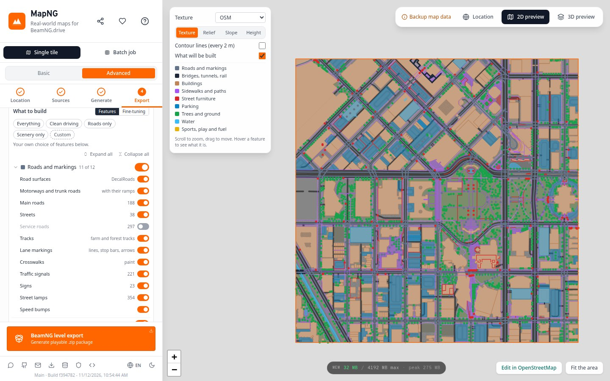
Assumed street parking
A town street with no parking tags gets a parking lane on each side, which makes an untagged residential street 10.6 m wide for 6 m of driving lanes. Fine-tuning now has Assume street parking, on by default. Off, only parking that is mapped gets built and those streets come out at their driving width.
🚶 Sidewalks your way: decals, and a curb height
Two new choices under Fine-tuning (advanced mode), both asked for in the Discord.
Sidewalks as decals
Switched on, no sidewalk mesh is built. A street's sidewalks become flat strips of paving beside the lanes, every footpath and cycle path is painted on the ground, and there are no curbs. You can drive over all of it, which suits park paths and cycle lanes especially.
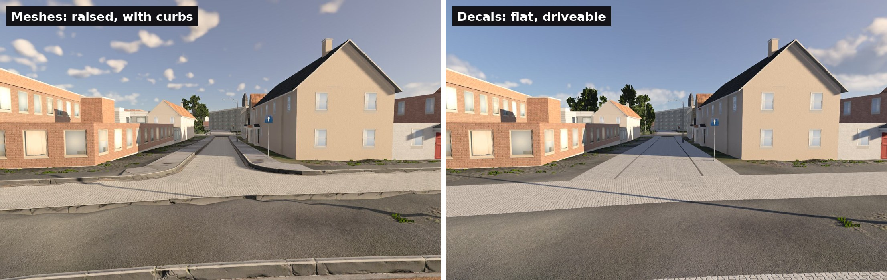
Measured on a 2 km town centre: the raised sidewalks are 731,000 triangles in 11 meshes. As decals the export took 35 seconds against 49 and the level was 64 MB against 89. One honest note: the frame rate in the game came out the same either way on our test machine, so choose decals for the look, the driving and the smaller level, not for speed.
Curb height
For the raised sidewalks: Standard (15 cm, a real curb), Low (8 cm) or Flush (3 cm). Lower curbs are kinder to low cars and easy to drive onto. Street furniture standing on a sidewalk follows the height you pick.
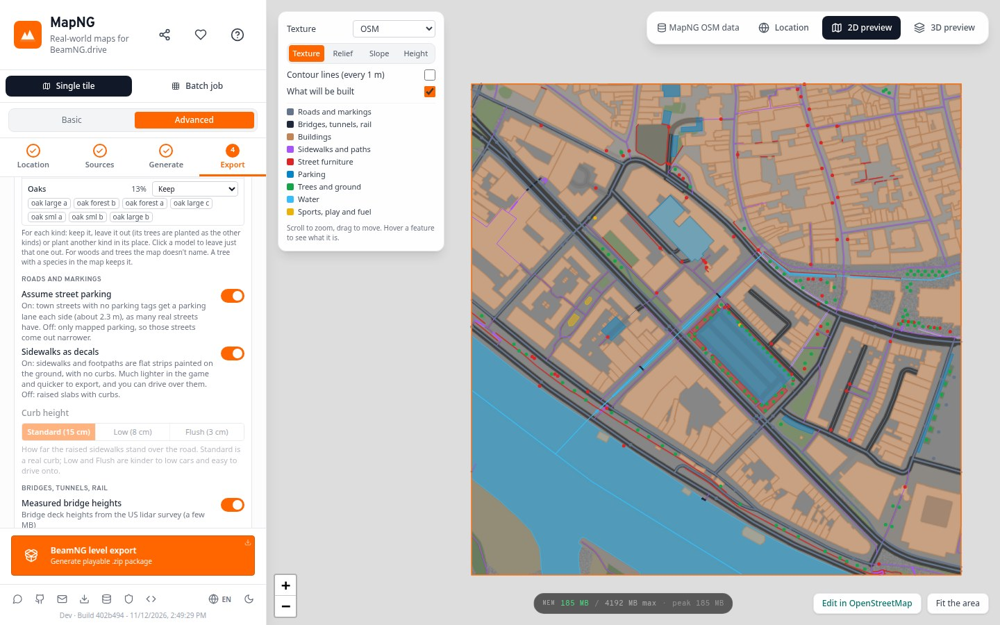
🗺️ Read the land before you pick your square
The location map has three new base layers, drawn in your browser from the global elevation tiles MapNG already reads. No other service is asked.
- Height colours: low to high over what is on screen, with shading and the range shown, so hilltops and valleys read as clearly on a town with 40 m of relief as on a mountain range.
- Shaded relief: the land's shape alone, in grey.
- Slope: steepness in colour, with a key. Where a road can go, and where it cannot.
Place and road names are drawn over them, as on the satellite layer.
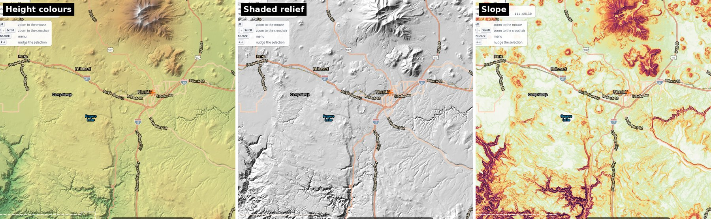
Lock the selected area
A new button under the recentre button locks the selected area in place. Locked, the area keeps its position and size while you zoom and pan the map, to set a spawn point up close for example. Unlocking brings the view back to the area.
🔭 The view distance follows the map
Every level used to draw 4 km. On a 20 km mountain map that meant everything past the nearest ridge was the flat water plane: an island where there are hills. The default is now Auto: the first of 4, 8, 12 and 16 km that covers the map's width. A small town map keeps 4 km.
Advanced mode's Level card can name a distance instead (2 to 16 km), for a weaker PC or a hazier look. The 2 km choice gets a little fog to hide the far edge. For comparison, the game's own levels draw 4.5 km (Hirochi Raceway) to 25 km (Italy).
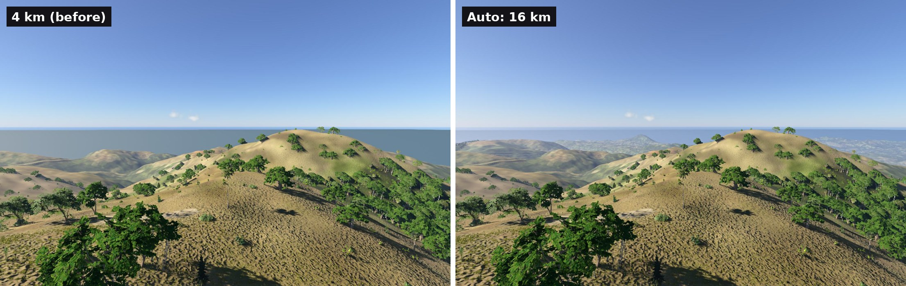
📨 Send report, on every level
When something looks wrong in a level, the most useful thing you can send is its export_report.txt. Until now that meant opening the level's ZIP and finding it. Each level in My Levels now has a Send report button: it shows you exactly what will be sent, you can add a note, and one click sends it.
- Nothing is sent unless you choose Send. The dialog shows the full text first.
- What a level report holds: the place, its coordinates and street names, your settings, and the export's own measurements and log. No account, no email address unless you type one in the note.
- Where it goes: private storage only the developer can read. Details on the Your data page.
📐 Lidar sits where it belongs
An elevation file gives the corner of its first cell, and each value belongs to the middle of its cell. MapNG read the corner as the first value, which put GPXZ lidar and every uploaded raster half a cell north-west of its place: half a metre on 1 m lidar. Roads from OpenStreetMap then sat half a metre off the road the lidar shows.
Measured against Mapterhorn, an independent lidar source, on six areas: GPXZ was 0.36 to 0.58 m west and 0.23 to 1.03 m north of it. Now four of the six agree to within 1 cm, and the two Alpine ones to within 0.4 m.
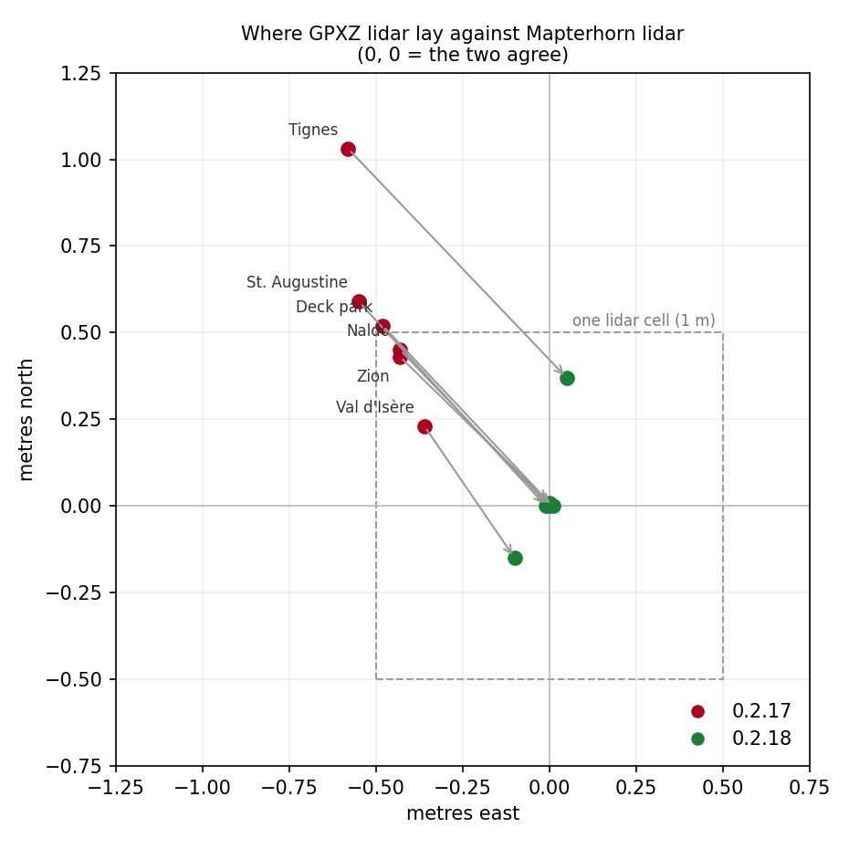
Uploading your own elevation
- A file with no location is placed at its real size. An ASC grid with no coordinates was stretched over whatever area was selected. It is now placed at its own cell size, centred where you choose, and the panel says so.
- "No geo metadata" no longer reads as a failure. The message now says what happens: the file has no location and will be fitted to the area selected on the map.
- Japanese survey GML: a ZIP of ZIPs uploads as it is downloaded; the file's own no-data cells are holes, not ground 10 km down; and tiles no longer overlap their neighbours by a cell.
- A square crop is announced. When a level's square has to be cut from a wider upload, the panel says how much is left out.
Modify also keeps a GPXZ level on its GPXZ terrain: it used to come back on the 30 m data.
GPXZ: some map sizes lost their lidar
GPXZ takes at most 10 km² in one request. MapNG cut a map into pieces of up to 3 km and then added a small overlap round each one, which made a 3 km piece 11.7 km², and GPXZ refused it. Maps whose pieces came out just under 3 km (about 2.75 to 3 km, 5.5 to 6 km, 8.25 to 9 km and 11 to 12 km a side) lost those pieces to the 30 m data, or GPXZ altogether. A quarter of all GPXZ terrain requests on the site were refused this way.
- The pieces are now sized with their overlap counted, so none is refused. Map sizes that already worked are cut exactly as before.
- When the day's GPXZ calls run out, MapNG stops asking and uses 30 m data for the rest, instead of asking five more times for every remaining piece.
Poland's NMT: the 1 m lidar, not the 5 m grid
Poland's elevation index lists a map sheet once for every year it was surveyed, as a 5 m grid in some years and as 1 m lidar in others. MapNG looked only at the years 2018 to 2020 and took the newest sheet whatever its grid, so in much of the mountains it built from the 5 m grid: terrain that looked, as the tester who found it put it, "like it's using 30 m". MapNG now asks every year the index has and takes the finest grid each sheet has. On his area in the Beskids that is 1 m lidar on all 12 sheets, where it was 5 m on all of them. The desktop app's downloads of these sheets could also be turned away by the Polish server; that is fixed too.
Very wide maps
A map more than about 55 to 78 km across (depending on latitude) stopped at Generate in the desktop app with "Create skia surface failed": the 30 m tiles were stitched at one fixed zoom, and the picture grew past what the drawing library takes. The zoom now follows the map's width. Found from a problem report on a 106 km map.
🧭 A suggested source, and a warning when free lidar looks wrong
Compare sources here already drew the same square from each elevation source. It now adds one line under the pictures: which of them to use. Usually that is the finest one. But it also runs one plain check on the free lidar, after a tester found his city came out with "random steep hills".
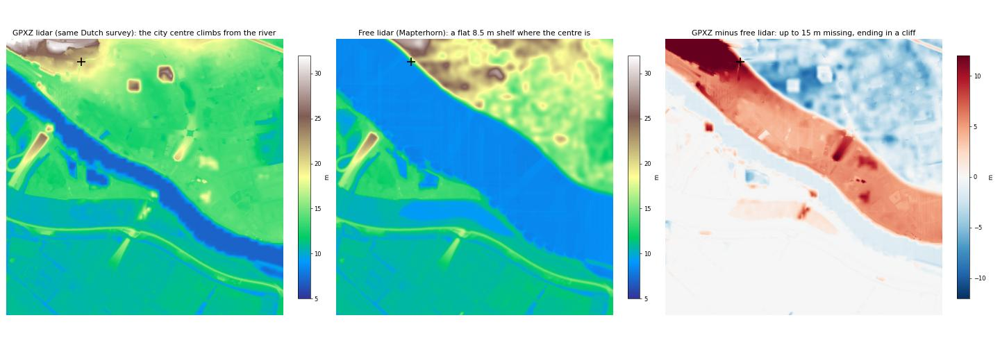
The check: lidar that lies level where the 30 m data shows a steady slope, metres away from it, over a fifth of the square. When it trips, the line suggests another source and says why. Tried on 19 test areas, it flags that shelf and nothing else.
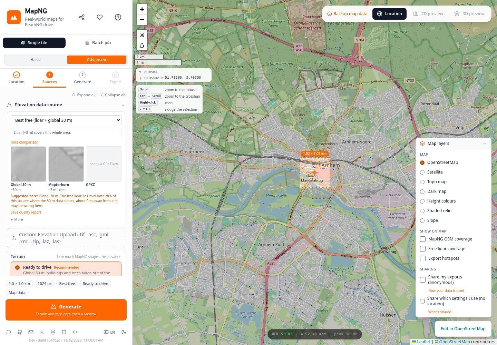
🌉 Bridges: an embankment is not a flyover, and a ring is one slab
The 10 m tent on an embankment
A tester's Arnhem level had a deck that stopped in mid-air with the road carrying on below it. The cause was an old rule: a road tagged as running on an embankment was treated as half a level above the roads around it, so where the dike road joins it, MapNG built a flyover over a junction that is at grade. The road climbed from 12 m to 22 m and back in 180 m.
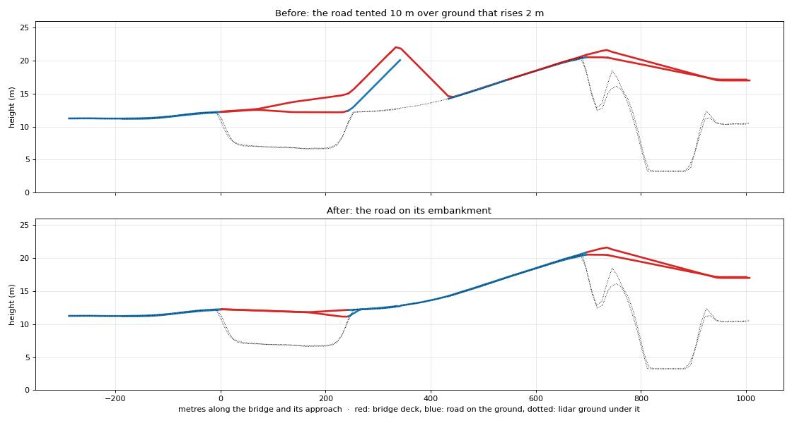
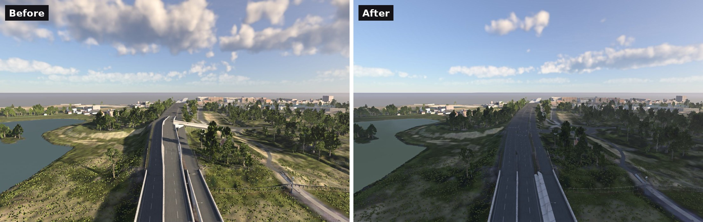
An elevated roundabout is one slab
A rotary on a flyover was solved piece by piece, each short stretch between two ramps taking its heights from the ramps. The ring rose and fell round its loop and each ramp met it with a step across the lane. MapNG now finds such rings, holds the whole ring on one plane, and brings the last metres of each ramp onto that plane too.
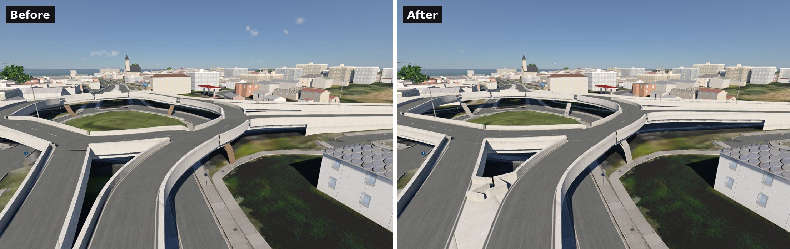
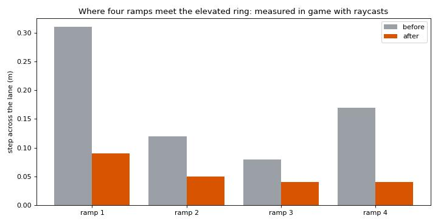
🚇 Tunnels: fewer left on the ground, cleaner mouths
- One thin stretch no longer throws out the whole tunnel. One mapped tunnel often runs through bores and open ledges in turn. A stretch with too little ground over it made the whole way "left on the ground": the road drawn across the cliff at a 450 % grade. Where the road is still bedded in the ground along such a stretch, the tube now stands in the open there and the rest is built as before.
- No holes over the middle of a low tunnel. Ground just under the ceiling of a low box is raised onto the roof instead of being opened, and it never covers a sidewalk beside it.
- No crack across the road at the face. A 0.1 to 0.2 m crack across one wheel track, 6 m deep, where the tunnel's floor met the ground.
- No step where a ramp joins inside the tunnel. Where a ramp joins inside a bore, the tunnel's mouth sits further out than the mapped tunnel's end. The open road on that stretch fell away on its own while the tunnel floor stayed level: a 0.65 m step across a motorway at the mouth. The road now runs on the floor out to the face.
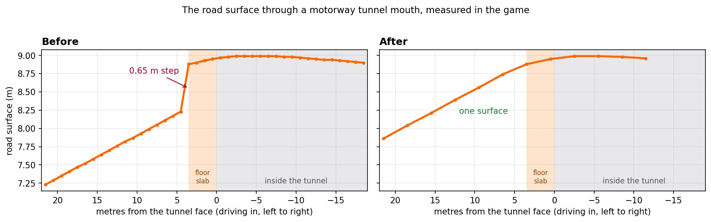
🧭 Backup map data keeps its bridges and tunnels
When OpenStreetMap's servers do not answer, MapNG falls back to Overture's copy of the map. That copy cuts long roads at tile edges, and the pieces lost their bridge and tunnel marks: a level made on a bad day had roads running down into rivers. Major and minor roads now keep them. In one tester's area 109 of 112 cut roads are placed again and the bridges built went from 46 to 82 (OpenStreetMap has 70 there).
🛟 When something goes wrong
No email address is asked for anywhere in MapNG, and none of this changes that.
If MapNG closes unexpectedly
A browser tab that runs out of memory takes your session with it. MapNG now leaves itself a note, in your own browser's storage, when a Generate or an export starts, and removes it when the job ends or you close the page normally. If the note is still there next time, MapNG offers your settings back (you see them before anything is applied) and, if you like, a report. The note is shown once and deleted. Nothing is sent.
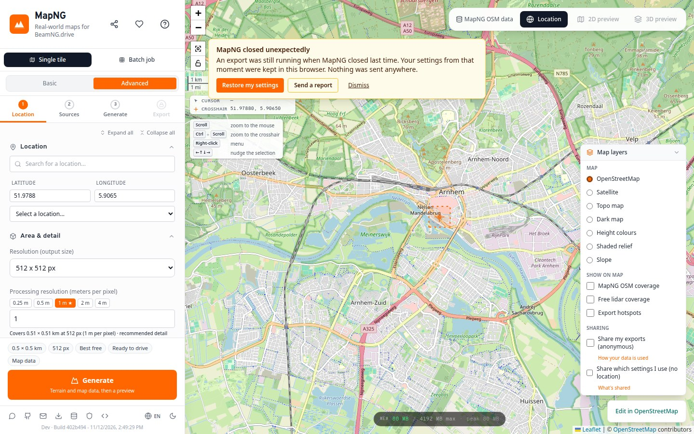
Reports from the website
The Send report window from the desktop app now opens on the website too when a Generate or an export fails. Same rules: it shows what is in it first, and nothing is sent unless you choose Send. A failed export also stays on screen with its reason instead of vanishing behind an alert.
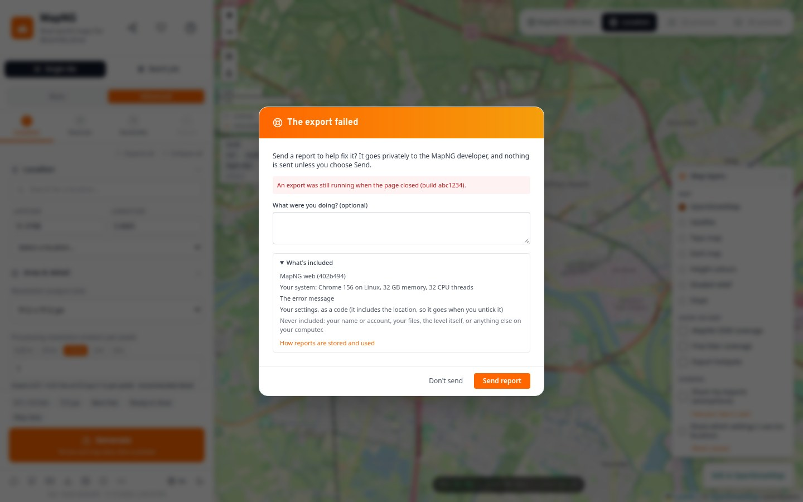
- The portable Windows app, started from inside its zip, now says "Extract the whole zip first" instead of opening and then failing at the first Generate. Found from a problem report.
- The website says when it was updated under you. A page left open while a new version went live kept asking for files that were gone, and Generate could end with no terrain and no message. The page now notices and offers a Reload.
- Problem reports keep the whole settings code. A long code copied from a report was cut short and read as invalid.
- A very wide map no longer stops Generate in the desktop app ("Create skia surface failed" on a 106 km map). Found from a problem report.
🔧 Smaller things
- A big city with background areas exports again. A 20 km city with background areas over half the map stopped with "Maximum call stack size exceeded" just after the base texture step. Found from a problem report sent from the app: thank you to whoever sent it.
- Italian: lominsa's translation is in, for every string whose English has not changed since it was written.
- The export report says why each guessed deck was built: over water, over a road, beside a lower road, or its height alone. Handy when a level has bridges where there are none.
- Fewer address lookups. The suggested level name asked OpenStreetMap's address service every time the map stopped moving. It now asks once, when a terrain exists, and popular places are answered from MapNG's own copy.
- Problem reports reach the developer faster (an email alert, with a cap so nobody can flood it).
🚧 Left open for the update after this one
Things testers raised that are understood but not in 0.3.0:
- Steep foot links as stairs. A footbridge that climbs from the ground to a flyover in 20 m is built as a steep ramp. It should be steps.
- Walls where two decks part. In the wedge between two ramps the walls of both decks overlap instead of meeting cleanly.
- Signal poles in the road. At junctions with wide corner curves a mast can stand in the asphalt instead of on the corner.
- Bus lanes, bus stops and cycle paths. Separate bus lanes and stops need their own look, and a cycle path should not read as a wide footpath.
- Curbs with decal sidewalks. Keeping the road's curbs as meshes while the sidewalks are decals.
- Buildings as separate objects, so one can be moved or removed in the World Editor, for maps where the count allows it.
- Coarse 30 m elevation. Where only 30 m data exists, the two sides of a divided road can come out at different heights with bridges guessed between them. A fix exists and passes 98 of 99 test cases; it waits on the last one.
- Free lidar checked automatically. The new warning is a hint under the comparison. Falling back to the 30 m data by itself where lidar is plainly wrong is the next step.
- A fresher planet. The copy is rebuilt as a whole for now. Small daily updates on top of it are planned.
- Very large city maps on the website. A 20 km city can run the browser out of memory. The desktop app has far more room, and the website now gives your settings back after such a crash.
- A level quality choice (lighter levels for 8 GB graphics cards) waits on proper measurements instead of guessed numbers.
🙏 Thanks
This version is built from the reports, screenshots and ideas of the people testing MapNG in the Discord. Thank you:
- dutch_guy_2003: sidewalks as decals, the curb height, the Arnhem levels and reports that led to the embankment fix and the lidar warning, bus lanes and cycle paths.
- glitter_shitter: the elevated roundabout and its screenshots, the 20 km city that found the export crash, Combined levels.
- Fizz_Mechanic: tunnels and gallery mouths, the area lock, the tree table.
- lominsa: elevation uploads and the lidar offset, the view distance, the Italian translation.
- kreunz: backup map data losing bridges, buildings as separate objects.
- Wonly: Poland's elevation coming out coarse, with the comparison that pinned it down.
- SailorSunny405: the height layer on the location map.
- brokenbraincells_: signal poles in the road.
- elmarzi, imadundurr, alxti, Jevi, frivolous_racing, SPLATPLAYS, fidwix: export reports, screenshots, questions and test levels along the way.
- Everyone who pressed Send report. Four fixes in this version came straight from reports sent from the app: the export crash on a big city, the very wide map, the settings code cut short, and the app started from inside its zip.
Map data © OpenStreetMap contributors and the Overture Maps Foundation. Elevation: Mapzen / AWS Terrain Tiles, Mapterhorn and its open-data sources, and GPXZ where you use it. Tree choices: iNaturalist records.
Heads-up: the Windows build still isn't code-signed. If SmartScreen warns you, choose More info, then Run anyway.
Found something? Use Send report (on a level, or when something fails), post in the MapNG Discord or open a GitHub issue. 🧡